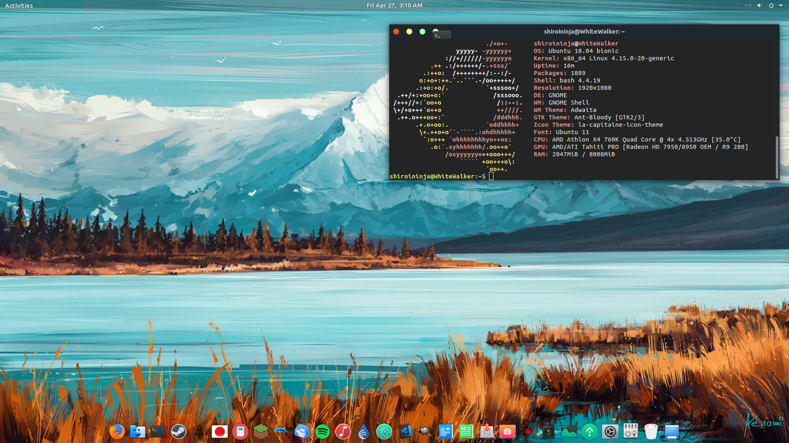

O Ubuntu é um Sistema Operacional (OS) de distribuição Linux e é muito utilizado por todo
o mundo. Sua interfae amigavel faz com que aqueles usuários acostumados com MAC ou Windows
sintam-se mais confiantes ao instalar o OS.
Antes de iniciar a instalação, é necessário estar atento a alguns detalhes como:
A máquina atende aos requisitos mínimos para receber o sistema.
Garantir conectividade com internet para instalação de Drivers e Atualizações.
A mídia bootavel está corretamente configurada.
Ter os drivers em mãos caso o sistema não encontre automaticamente.
Garantir que a máquina não se desligará durante o processo.

Confira abaixo um video explicativo onde você mesmo pode baixar o linux, criar uma mídia de instalação e instalar o Sistema Operacional na sua máquina.
Quando tudo estiver pronto, aproveite este software que é totalmente gratuito e cheio de funcionalidades interessantes. Você também pode personalizar o seu sistema para ficar do jeito que preferir. Confira a minha área de trabalho Ubuntu, configurei do jeito que eu gosto. hehehe!!!
